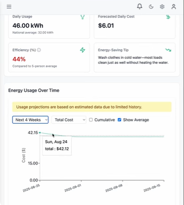
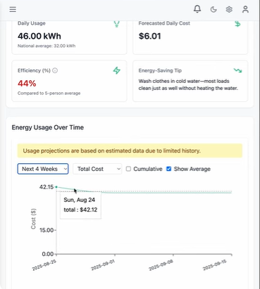

Demo video
5-minute video showing dashboard, forecasting, real-time alerts, and more.
Screenshots
Dashboard


Appliances
Actual vs Forecast

Forecasting — short summary
Model selection is data-driven. If appliance history < 14 days, EnergyIQ uses Holt Linear (level + trend). If history ≥ 14 days it uses Holt-Winters additive with a 7-day season to capture weekly patterns. New appliances use a wattage×hours/day fallback with seasonal multipliers and bounded noise. Predictions are capped to avoid unrealistic spikes.
Representative evaluation
These are example demonstration metrics from a simulated 30-day sample dataset. Actual results depend on user data.
MAE ≈ 0.24 kWh RMSE ≈ 0.36 kWh MAPE ≈ 4.8%
Run locally
Clone, run backend, then start frontend. Use H2 for demo mode.
git clone https://github.com/tonna16/TrackEnergy cd TrackEnergy/backend mvn spring-boot:run # in separate shell cd TrackEnergy/frontend npm install npm run dev
See README in repo for full setup and environment variables.
Roadmap
- Integrate real smart-plug telemetry and smart-meter APIs
- Add adaptive ML per-home profiles
- Improve PWA / mobile responsiveness
- Public beta to collect real-world data and re-evaluate metrics